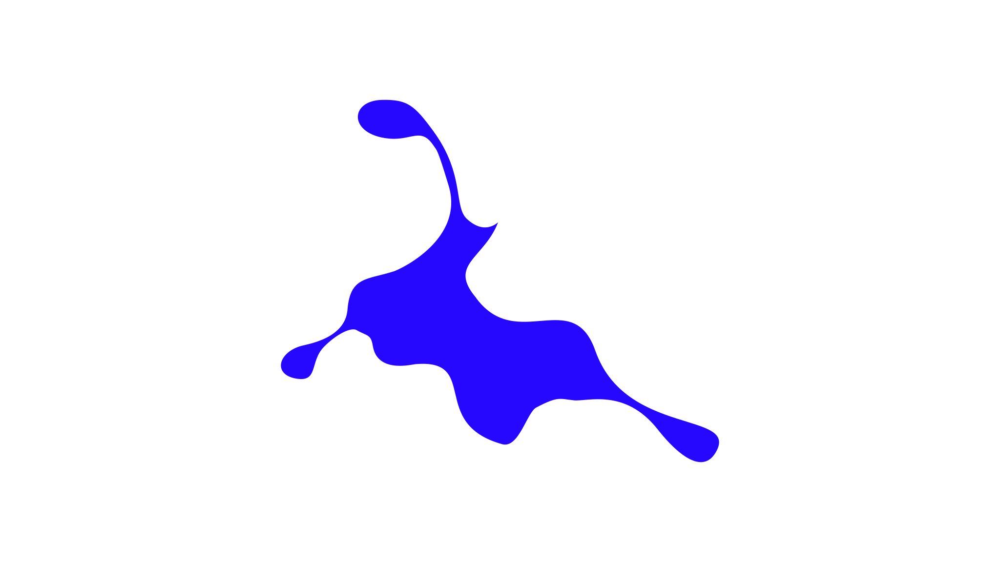
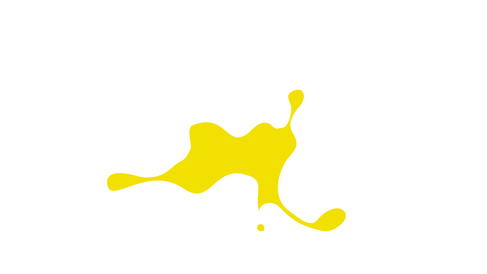

OPEN CALL FOR ARTISTS
NOWRUZ AS NOW! — ARTIST RESIDENCY 2027
An invitation to reimagine rituals, renewal, and togetherness.
5 artists will be selected.
APPLY HERE

- Application deadline
- 30 December 2026, 23:59 CET
- Residency
- 8–20 March 2027
- Festival presentations
- 16–20 March 2027
- Location
- Domaine Foray, Burgundy, France
- Selected artists
- 5
About the residency
Five artists. Thirteen days. One shared space for research, experimentation and exchange.
Symbiotika invites artists from all disciplines and cultural backgrounds to Nowruz As Now! Artist Residency 2027 at Domaine Foray in Burgundy, France. From 8–20 March 2027, we explore contemporary ideas of ritual, renewal, belonging and collective experience.
Inspired by Nowruz — the ancient Persian New Year and celebration of spring — the programme treats inherited rituals as living material for artistic exploration rather than traditions to reproduce.
The residency culminates in public presentations during Nowruz As Now! Festival, 16–20 March 2027.
The artistic invitation
What does it mean
to begin again?
How do rituals shape our relationships with ourselves, each other and the world? What happens when traditions travel into unfamiliar places and encounter new people and interpretations?
Can inherited rituals become material for contemporary creation? Can art help us invent new forms of gathering?

Respond through your own practices, histories and artistic languages. Projects may engage with the symbols and traditions of Nowruz or explore transition, memory, displacement, nature, belonging and the relationship between past and present.
We welcome critical, experimental, playful and unconventional approaches that leave room for discovery and exchange.
No previous knowledge of Nowruz or connection to a culture that celebrates it is required.
For the full conceptual framework, read our curatorial statement, Nowruz As Now! — An Invitation to Reimagine Rituals, Renewal, and Togetherness.
Who can apply?
- All disciplines: dance, performance, theatre, music, sound, visual arts, film, installation, participatory and interdisciplinary practices.
- All ages, nationalities and cultural backgrounds.
- All stages of artistic development, including emerging artists.
- Artists interested in experimentation, interdisciplinary exchange and intercultural dialogue.
- Artists available for the full residency, 8–20 March 2027, and committed to the festival’s public presentations.
We particularly encourage artists whose practices, experiences or perspectives are underrepresented in conventional artistic institutions. New ideas and existing projects that resonate with the curatorial framework are welcome.
What we offer
- 13-day residency at Domaine Foray, 8–20 March 2027.
- Accommodation throughout the residency.
- Creative and rehearsal spaces, including studio and recording facilities where available.
- Exchange and potential co-creation with fellow residents.
- Public presentation as part of Nowruz As Now! Festival.
- Up to €100 travel contribution per artist.
A shared living and working experience, supporting individual artistic development and meaningful exchange.
Accommodation
Accommodation is provided at Domaine Foray. Depending on availability, shared bedrooms may be used, with access to shared kitchen facilities.
Meals, groceries, personal supplies and other personal living expenses are not covered. Artists arrange and cover these costs themselves.
Indicate accommodation preferences, accessibility requirements and other relevant needs in the application form. We will do our best within the facilities and resources available.
Artistic development
You do not need to arrive with a finished work.
Arrive ready to research, test and develop your proposal into a public presentation for the festival, 16–20 March 2027. This may be a performance, concert, installation, screening, participatory experience or another format developed with the organisers.
Stay open to the residency environment, other participants and opportunities for collaboration.
Participation in the festival’s public presentations is required.
About the location
Domaine Foray — Burgundy, France
Surrounded by the Burgundy countryside, Domaine Foray offers space for artistic creation, reflection and exchange. Step away from everyday routines and dedicate time to artistic exploration while living and working alongside other artists.
How to apply
- Complete the online application form.
- Introduce yourself and your artistic practice.
- Explain your motivation.
- Describe the project or research you want to explore.
- Upload the two PDF documents listed below.
What to upload
- Artistic portfolio PDF: selected previous works introducing your practice and approach.
- Project proposal PDF: your idea, research questions or creative process, and its connection to the festival’s curatorial framework.
Your proposal does not need to be a finished production plan. We are interested in your intentions, questions and what you want to explore. You may include sketches, images, references or other supporting materials.
Selection approach
- Originality and artistic quality of the project or research.
- Relevance to the festival’s curatorial framework.
- Motivation and openness to experimentation.
- Potential for exchange within an interdisciplinary group.
- Feasibility of developing and presenting the work within the residency’s timeframe and available resources.
We aim to bring together practices, perspectives and experiences that enrich one another.
We recognise that artistic potential is not always reflected through an extensive portfolio or institutional recognition. Every application will be carefully considered.
IMPORTANT DATES
- Application deadline
- 30 December 2026
23:59 CET - Residency
- 8–20 March 2027
- Public festival presentations
- 16–20 March 2027
More than a residency
One encounter does not have to end when the programme does.
At Symbiotika, artistic encounters can become lasting relationships. Each new collaborator is a potential member of a growing community.
We create spaces to connect, exchange knowledge, support one another and discover possibilities beyond a single event. Nowruz As Now! is part of this ongoing commitment to community through art and shared experience.


QUESTIONS AND CONTACT
For questions about the residency or application process, please contact:
Instagram: @symbiotikart